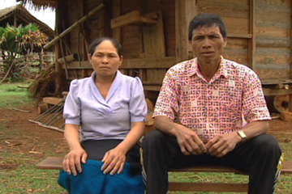
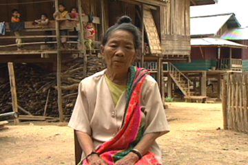
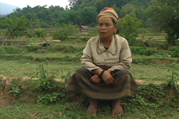

Be A Tree
Ms. See Phan and Mr. Bounthavi from the Ton Neua Village discuss the hardships they faced during the bombings...
Play 2:30
An American in Laos
Fred Branfman became one of the first outsiders to detail the secret bombings from the villagers' perspective...
Play 2:30

10 Years in a Cave
Mrs. Ounthong from the Muong Nga Village describes her 10-year ordeal living in caves.
Play 2:30
Lies to Congress
The United States congress was kept in the dark about the secret bombings over Laos. Fred Branfman talks about his time...
Play 2:30

Exploding Buffalo
Mrs. Sing Thong from the Muong Nga Village details the unstable nature of the munitions...
Play 2:30
A Human Perspective
Four decades later, Fred Branfman reflects on his life, Laos, and humanity's role in war's aftermath.
Play 2:30